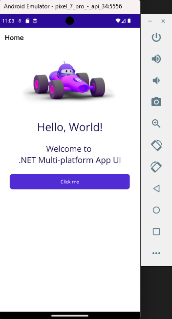
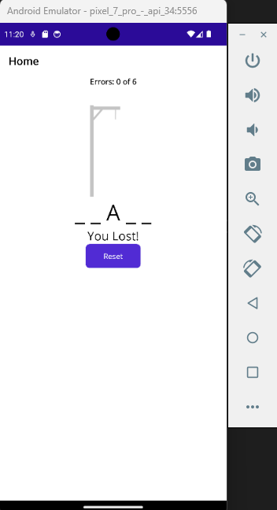
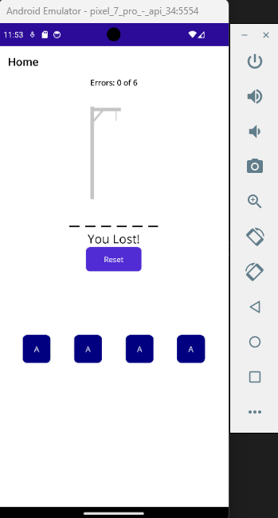
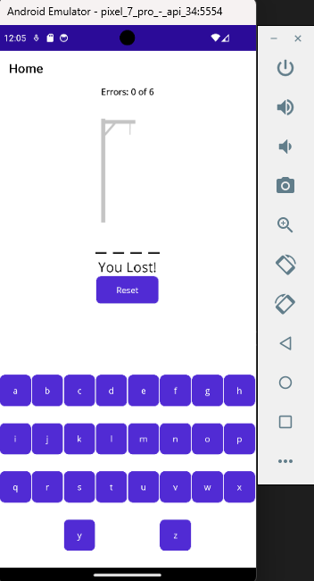
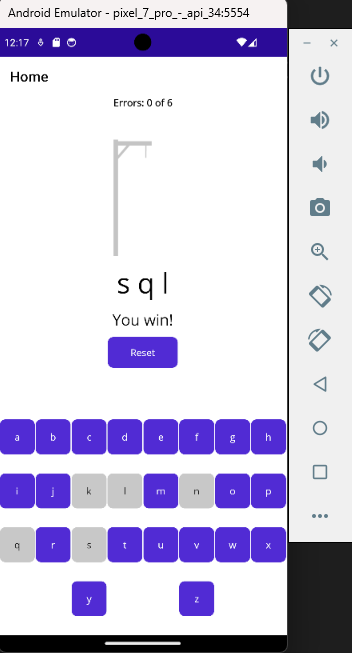
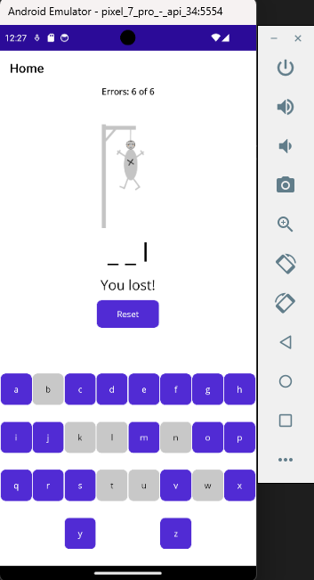
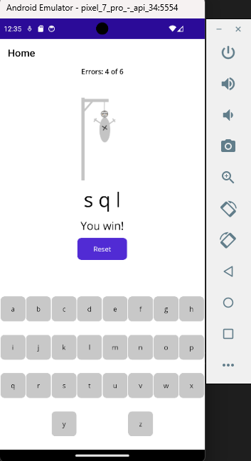

.NET MAUI
.NET MAUI
ProjectProyecto
The goal of this project is to build the Hangman game with .NET MAUI, applying what I learned in the course about interface development and data architecture in applications. The main topics covered include creating and using Layouts in XAML, properly configuring the BindingContext and implementing the INotifyPropertyChanged interface to handle communication between the logic and the XAML interface.
El objetivo de este proyecto es desarrollar el juego del Ahorcado (Hangman) utilizando .NET MAUI, aplicando conocimientos aprendidos en el curso para el desarrollo de interfaces y de la arquitectura de datos en aplicaciones. Entre los principales temas que se abordan está la creación y el uso de Layouts en XAML, la configuración adecuada del BindingContext y la implementación de la interfaz INotifyPropertyChanged para manejar la comunicación entre la lógica y la interfaz del XAML.
Project LinksEnlaces del Proyecto
ChallengesRetos
Generate dynamic buttonsGenerar botones dinámicos
Create the buttons dynamically so they adapt to different device screens.
Crear los botones de forma dinámica para que se ajusten a las diferentes pantallas de los dispositivos.
Use FlexLayoutUtilizar FlexLayout
Implement a FlexLayout to organize and adapt the on-screen elements flexibly.
Implementar un FlexLayout que permita organizar y adaptar los elementos en pantalla de manera flexible.
Using BindingContextUso de BindingContext
Set and update a BindingContext that keeps the game data and logic in sync with the interface,
making sure changes in the FlexLayout or any other control are reflected immediately.
Establecer y actualizar un BindingContext que sincronice los datos y
la lógica del juego con la interfaz, asegurando que los cambios en el FlexLayout o
en cualquier otro control se reflejen de inmediato.
Project ScreenshotsCapturas del Proyecto






